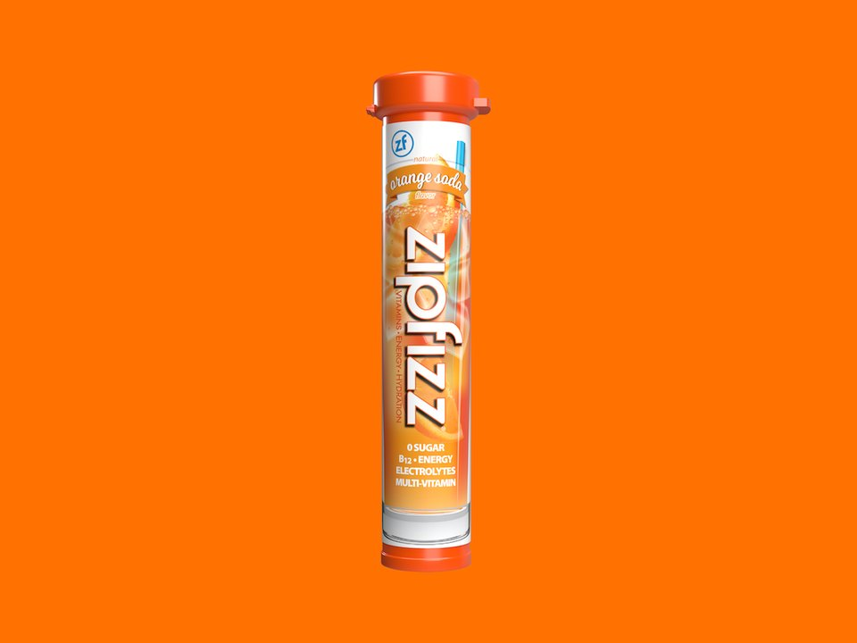

Product imagery supplied by the retailer. Packaging may vary — verify the Supplement Facts panel on the container you receive.
Zipfizz
Energy Drink Mix
Our analysis — editorial take, not from the label
Functions more like an energy drink than a pure hydration mix, pairing 100 mg caffeine with the highest potassium dose, 950 mg, of any product in this set.
- Sodium
- 70 mg
- Potassium
- 950 mg
- Sugar
- 0 g
- Servings
- 20
Price tier: Mid-range · relative cost per full serving across this database
We don't list dollar prices — they change daily and go stale. Check the live price instead:
View current price Compare all hydration mixesScoop Sense doesn't collect user reviews and won't invent them. Read customer reviews on Amazon
Affiliate links — Scoop Sense may earn a commission at no additional cost to you.
Sold in 20+ flavors including Grape, Citrus, and Pink Lemonade, sweetened with sucralose rather than sugar.
Label verified: July 2026 · View label source
Label data
Per full serving · 20 servings per container · from the manufacturer's panel
| Sodium | 70 mg |
|---|---|
| Potassium | 950 mg |
| Magnesium | 100 mg |
| Sugar | 0 g |
| Caffeine | 100 mg |
| Potassium | 950 mg |
| Magnesium | 100 mg |
| Sodium | 70 mg |
| Proprietary blend | No |
Primary label source: Carb Manager — label nutrition data · verified July 2026
Cautions
- Contains 100 mg caffeine from green tea leaf extract and guarana, about the same as a cup of coffee.
- 950 mg potassium per serving is the highest dose in this category; consult a doctor if you take potassium-sparing medication or have kidney disease.
- Sweetened with sucralose; zero sugar.
Product details
Where this label sits
Zipfizz Energy Drink Mix is one of the hydration mixes in the Scoop Sense database. Every active ingredient on the panel is listed with its own dose — nothing is hidden inside a blend total. It runs 20 servings per container at the full labeled serving. Everything on this page comes from the manufacturer's supplement facts panel as of July 2026 — never from the marketing page.
Key ingredients & studied doses
- Potassium · 950 mg. Potassium supports normal muscle and nerve function and fluid balance.
- Caffeine (green tea leaf extract + guarana) · 100 mg. Caffeine is commonly used to support alertness and reduce perceived effort during activity.
- Magnesium · 100 mg. Magnesium supports normal muscle and nerve function as part of electrolyte balance.
- Sodium · 70 mg. Sodium supports normal fluid balance, though the dose here is modest compared with potassium.
Flavors & sweetener
Sold in 20+ flavors including Grape, Citrus, and Pink Lemonade, sweetened with sucralose rather than sugar.
Who it's best for
Lighter sessions and everyday training — the sodium load is moderate. Derived from the label figures above — not medical advice.
How we log this label
Every entry is built the same way: we read the current supplement facts panel, log each disclosed dose, compare it against the amounts used in published research, flag proprietary blends, and state the cautions plainly. The full methodology explains each step.
This label against the research
How we evaluate labelsEach bar shows the amount commonly used in published human research, and where this label's dose falls against it. Research amounts are context, not a recommendation — they are not doses, and nothing here is medical advice.
-
Caffeine100 mg
50% of the low end of the studied range0studied range 200 mg–400 mg450 mg
Performance studies most often use 3–6 mg per kg of body weight, which works out to roughly 200–400 mg for most adults. The FDA cites 400 mg a day as an amount not generally associated with negative effects in healthy adults.
-
Sodium70 mg
23% of the low end of the studied range0studied range 300 mg–700 mg1200 mg
Sports-nutrition guidance puts 300–700 mg of sodium per litre of fluid in the range for sustained sweating. Higher-sodium mixes are built for heavy sweat losses, not for casual sipping.
Common questions about Zipfizz Energy Drink Mix
How much caffeine is in Zipfizz Energy Drink Mix?
100 mg per full labeled serving — roughly 1.1 small cups of coffee. The FDA cites about 400 mg per day as an amount generally not associated with negative effects in healthy adults, and coffee, tea, and energy drinks count toward the same total.
How much sodium is in Zipfizz Energy Drink Mix?
70 mg per serving, with no sugar. Sodium is the main electrolyte lost in sweat, but needs vary widely with sweat rate and diet — and daily sodium from food counts toward the same total.
Does Zipfizz Energy Drink Mix disclose every dose?
Yes — the label lists an individual amount for each ingredient, with no proprietary blends. That is what the "label fully disclosed" tag on Scoop Sense means, and it is what lets each dose be compared against the amounts used in published research.